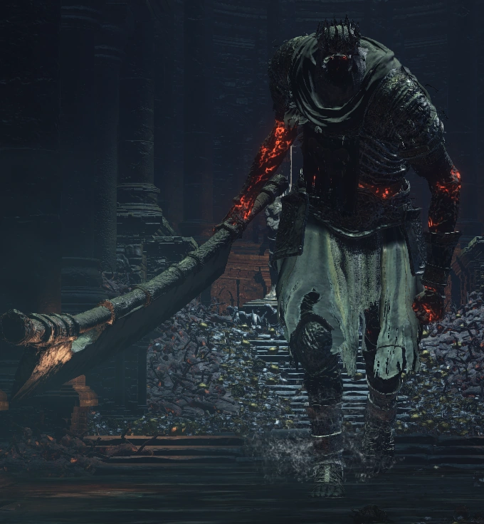

← Volver
← Volver
Yhorm, el Gigante es uno de los Señores de Ceniza y un jefe de Dark Souls III. Conocido como el "Señor Recluido de la Capital Profanada", Yhorm es el descendiente de un conquistador antiguo, al que la gente que una vez fue oprimida por su antepasado le pidió que los gobernara. En el pasado, fue un habilidoso gigante combatiente, lo suficientemente poderoso como para convertirse en el señor de una ciudad y en un Señor de Ceniza. Durante el combate, ataca al jugador con un machete masivo que brilla como brasa luego de que su barra de salud caiga hasta cierto punto.
"Yhorm es el descendiente de un antiguo conquistador, pero la gente que una vez fue oprimida por la mano de su antepasado le rogó que los gobernara, sirviendo como ambos una espada pesada y un escudo duro como la roca."
Dada la presencia en el juego de un arma tan absurdamente poderosa contra él que cualquiera puede utilizar, a la vez de tener una de las barras de salud y daño más altos de todos los jefes, Yhorm es interesante en cuanto puede ser considerado tanto el jefe más fácil o uno de los más difíciles de todo Dark Souls III, dependiendo si se elige capitalizar o no en sus debilidades. Este jefe no es opcional y debe ser derrotado para progresar en el juego. Para asistir en la batalla con Aldrich, solo un NPC se encuentra a nuestra disposición:
¿Dónde se puede encontrar a Yhorm, el Gigante en Dark Souls III? Yhorm puede encontrarse sentado en su trono detrás de una puerta de niebla en la Capital Profanada, en la parte más baja del templo, justo detrás de la Llama Profanada.
| Playthrough | NG | NG+ | NG++ | NG+3 | NG+4 | NG+5 | NG+6 | NG+7 |
|---|---|---|---|---|---|---|---|---|
| Solo Souls | 36000 | 108000 | 118001 | 121500 | 129600 | ? | 135000 | 137700 |
Esta es la cantidad de Almas que obtendremos al derrotar a Yhorm, el Gigante en los diferentes playthrough, desde el New Game regular hasta NG+7. También dropearán el Alma de Yhorm el Giante y las Cenizas de un Señor.
| Playthrough | NG | NG+ | NG++ | NG+3 | NG+4 | NG+5 | NG+6 | NG+7 |
|---|---|---|---|---|---|---|---|---|
| Vida Total | 27.822 | 41.149 | 45.264 | 47.322 | 49.379 | 53.494 | 55.552 | 57.609 |
| Tipo de Daño | Básico | Golpe | Cortante | Empuje | Mágico | Fuego | Rayo | Oscuridad |
| Absorciones | 25% | 5% | 17% | 15% | 5% | 100% | -12% | 0% |

 ↑
↑